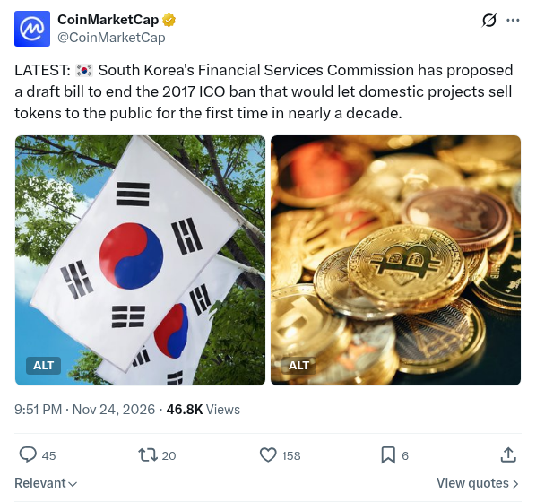

금융위원회 정부안, 정확히 어디까지 왔나?

금융위원회는 2026년 11월 24일 정부안을 공개해 정무위원회에 넘겼고, 이제 국회 공청회와 입법 심사를 앞두고 있습니다.
금융위원회는 2026년 11월 24일 이억원 금융위원장 주재로 제6차 가상자산위원회를 열고 디지털자산기본법 정부안을 공개했습니다.
같은 날 21:09 KST에는 이억원 위원장이 공식 계정(@fsclew)에 원화 스테이블코인 도입과 국내 디지털자산 발행(ICO) 허용을 골자로 한 글을 올렸습니다.
2026년 11월 26일 09:58 KST 갈무리 화면에는 조회 3,213회로 표시됐습니다.
다음 날인 2026년 11월 25일 09:00 KST에는 금융위원회 공식 계정(@fsckorea)이 이 글을 재게시했습니다.
이후 일정은 이미 국회로 넘어갔습니다.
머니투데이 2026년 11월 26일 보도에 따르면 금융위원회는 2026년 11월 25일 오후 더불어민주당 소속 유동수 국회 정무위원장에게 정부안을 전달했습니다.
유 위원장은 2026년 11월 30일 당 정무위 정책조정회의에서 의견을 들은 뒤 2026년 11월 말 대표발의할 계획으로 전해졌고, 국회 정무위원회는 2026년 12월 3일 오전 10시 디지털자산기본법 공청회를 연다고 공지했습니다.
여기에 2026년 10월 29일 정태호 의원이 대표발의한 기존 법률안(의안번호 2222314) 등 여러 의원안도 국회에 올라 있어, 병합 심사 과정에서 조문이 바뀔 여지가 남아 있습니다.
2017년 ICO 전면 금지, 왜 막혔고 그동안 무슨 일이 있었나?
정부는 2017년 9월 투기와 유사수신 사기를 막겠다며 모든 ICO를 금지했고, 국내 프로젝트의 해외 우회 발행이 관행이 됐습니다.
2017년 9월 29일, 김용범 금융위원회 부위원장 주재로 열린 가상통화 관계기관 합동 태스크포스(TF)는 "증권형뿐 아니라 코인형까지 기술·용어와 무관하게 모든 형태의 ICO를 금지할 방침"을 발표했습니다.
당시 보도참고자료에는 시중 자금이 투기성으로 쏠리는 걸 막고 다단계·유사수신 피해를 차단하겠다는 배경이 적혀 있습니다.
청구인들이 이 방침에 반발해 낸 헌법소원은 2022년 9월 29일 헌법재판소(2018헌마1169)에서 공권력 행사로 보기 어렵다며 각하됐습니다.
그 뒤 국내 게임사나 플랫폼 기업은 한국에서 직접 코인을 발행하지 못하는 대신, 싱가포르나 홍콩에 별도 재단이나 법인을 세워 토큰을 발행한 뒤 국내 거래소에 상장하는 길을 택했습니다.
파이낸셜뉴스 보도에서는 위메이드의 위믹스(WEMIX), 넷마블의 마브렉스(MBX), 컴투스홀딩스의 엑스플라(XPLA)가 해외 발행 사례로 꼽혔고, 금융위원회가 2026년 11월 24일 배포한 보도자료에도 국내 플랫폼 기업이 해외 별도 재단을 통해 디지털자산을 발행해 국내에 유통한 사례가 제도 개선 배경으로 직접 언급됐습니다.
금융위원회는 그동안 「특정 금융거래정보의 보고 및 이용 등에 관한 법률」(자금세탁 방지)과 2024년 7월 시행된 「가상자산 이용자 보호 등에 관한 법률」(이용자 재산 보호·불공정거래 규제)만으로는 산업과 발행을 다루기 어렵다고 진단했습니다.
이번 제정안에서 용어를 '가상자산'에서 '디지털자산'으로 바꾸고, 매매·중개·보관·운용업과 거래소(디지털자산플랫폼운영자)를 나눠 규율하려는 이유도 그 빈틈을 메우려는 데 있습니다.
코인 발행(ICO)은 앞으로 어떤 조건을 거쳐야 허용되나?
아무 프로젝트나 바로 판매할 수 있는 구조가 아니라, 금융위에 백서를 신고·공개하고 숙의기간을 거쳐야 합니다.
이번 정부안에서 국내 ICO는 '발행공시'와 '유통공시' 두 겹으로 묶입니다.
기존처럼 발행사가 백서를 홈페이지에 한 장 띄워 놓고 텔레그램으로 홍보하던 방식과는 거리가 멉니다.
금융위원회 첨부 자료(제정안 주요 내용)를 바탕으로 실제 코인 하나가 나와 거래소에 올라가기까지의 절차를 순서대로 정리하면 아래와 같습니다.
| 단계 | 의무 주체 | 제출·공개 서류 | 핵심 조건과 책임 |
|---|---|---|---|
| 1. 발행 전 신고 | 발행인·개발·운영 참여자, 또는 주선 매매·중개업자 | 디지털자산백서, 디지털자산설명서 | 취득권유자, 자금 사용처, 발행량, 사업 내용, 위험 요인 기재 후 금융위 신고 |
| 2. 공시와 대기 | 금융위 신고 수리 후 통합공시시스템 공개 | 신고 수리된 백서·설명서 | 중요사항 누락 시 정정 요구, 숙의기간(예: 7일) 이후 취득권유 허용 |
| 3. 거래소 상장 | 디지털자산플랫폼운영자(거래소) | 거래지원보고서, 설명서 | 상장 전(예: 7일 전) 제출·공시, 기존 공시 백서 갱신으로 갈음 가능 |
| 4. 상장 후 유지 | 발행 주체·거래소 | 수시공시(법정·자율공시) | 발행·유통량 변경, 해킹·전산장애 등 가격 영향 정보 즉시 공시 |
금융위원회 별첨 자료는 유럽연합 암호자산시장법(MiCA) 사례를 들며, 백서 내용에 대한 금융당국의 실질적 심사까지는 요구하지 않는다고 적었습니다.
중요사항이나 첨부 서류가 빠졌는지 확인해 정정을 요구할 수는 있지만, 그 프로젝트가 돈을 벌 만한지 또는 사기가 아닌지를 정부가 보증해 주는 제도가 아니라는 뜻입니다.
대신 백서나 거래지원보고서에 거짓을 적거나 핵심 내용을 빼먹으면, 공시 의무 주체와 임원에게 손해배상책임을 묻고 과징금과 형사처벌까지 적용할 근거를 넣었습니다.
해외 시장은 왜 들썩이나? 기대와 실제 문턱의 간극

해외에서는 자금 유입을 기대하지만, 국내 쟁점은 거래소 지분 제한과 공시 문턱입니다.
가상자산 시세·데이터 플랫폼 코인마켓캡(@CoinMarketCap)이 2026년 11월 25일 14:51 KST 올린 속보 글은, 2026년 11월 26일 09:41 KST 갈무리 화면 기준 조회 4만 6,800여 회, 답글 45, 리포스트 20, 좋아요 158이었습니다.
같은 시각 엑스 페이지에서 확인한 코인텔레그래프(@Cointelegraph) 게시물은 조회 6만 3,488회였고, 가상자산 시황·뉴스 계정 애시 크립토(Ash Crypto, @AshCrypto)는 주식에서 코인으로 자금이 옮겨가면 알트코인에 큰 호재가 될 것이라고 썼습니다.
이 글은 같은 시각 엑스 페이지 기준 조회 10만 4,298회, 좋아요 1,713개를 기록했습니다.
국회 논의에서 가장 큰 불씨는 ICO 자체가 아니라 거래소 대주주 지분 한도입니다.
정부안은 디지털자산 거래소 대주주의 지분을 원칙적으로 20%로 묶고, 금융위원회 승인을 받은 금융회사 등에만 예외적으로 34%까지 허용(초과분 의결권 제한, 기존 거래소 3년·중소형 최대 6년 유예)하도록 설계했습니다.
이를 두고 야당은 전례 없는 사후 규제이자 재산권 침해 우려라고 반발하고, 여당 내부에서도 찬반이 갈려 있으며, 국회입법조사처 역시 2026년 3월 사후 강제 처분의 위헌 소지를 지적한 바 있습니다.
법안 전체가 이 쟁점에 묶이면 ICO 조항의 처리 일정도 함께 밀릴 수 있습니다.
업계에서는 실효성에 대한 현실적인 질문도 나옵니다.
웹3 리서치 분석가 라이언 윤(Ryan Yoon, @ryanyoon_eth)은 엑스 스레드에서, 국내 ICO 길이 열려도 해외 거점의 세제 등 이점을 대체하기는 어렵다고 봤습니다.
파이낸셜뉴스가 인용한 업계 관계자는, 이용자 보호 취지에는 공감하지만 발행 요건이 까다로워 자본력을 갖춘 대기업 위주로 시장이 형성될 가능성이 크다고 말했습니다.
서울경제 등 2026년 11월 24일 보도에 따르면, 투자자들이 기대하던 가상자산 현물 상장지수펀드(ETF)나 파생상품 허용 근거는 이번 정부안 주요 내용에서 빠졌습니다.
블록미디어 2026년 11월 25일 보도에 따르면, 탈중앙화금융(DeFi) 규율 범위도 시행령과 하위 규정 검토 과제로 미뤄졌습니다.
개인 코인 투자자에게 당장 달라지는 점은 무엇인가?
지금 당장 국내 거래소에서 한국 ICO 청약에 들어갈 수는 없고, 공시 확인과 투자 위험은 개인 몫으로 남습니다.
전자신문 보도에 따르면 정부안은 국내 ICO에서 개인투자자의 투자금액 상한을 별도로 두지 않았습니다.
그렇다고 규제가 느슨하다는 의미는 아닙니다.
제정안이 시행되면 상장 전 거래지원보고서 공시와 상장 후 유통량 변경 즉시 공시가 법제화되어, 그동안 논란이 잦았던 '몰래 유통량 늘리기'나 정보 비대칭을 따질 법적 근거가 생깁니다.
이용자 보호 장치도 함께 커집니다.
정부안은 디지털자산업자가 해킹이나 전산장애를 겪어 이용자 피해가 나면 사업자 과실이 없더라도 원칙적으로 무과실 손해배상책임을 지도록 했고, 전산 안전성 의무를 어겨 사고가 나면 금융위가 매출액의 최대 10%까지 징벌적 과징금을 물릴 수 있는 근거를 담았습니다.
또한 제정안이 시행되면 이용자 자산은 사업자 재산과 분리해 도산 시에도 보호되고, 거래소 임직원이 퇴직한 뒤 1년이 지나지 않아 미공개 중요정보를 이용해 거래하는 행위도 처벌 대상에 포함됩니다.
원화 스테이블코인(법률상 디지털지급토큰)은 초기 은행권 과반 지분 컨소시엄(핀테크·기술기업 최대주주 가능, 자기자본 50억 원 이상)부터 허용하고 발행잔액 100% 이상을 예치·신탁하도록 설계했습니다.
당장 개인 투자자가 조심해야 할 대목은 시차입니다.
이 글 작성 시점인 2026년 11월 26일 기준으로는 정부안이 공개됐을 뿐, 국회 통과와 시행까지는 아직 남아 있습니다.
따라서 "정부 허가를 받아 국내 ICO를 미리 연다"며 텔레그램이나 오픈채팅으로 개인 지갑 입금을 권유하는 곳이 있다면 현행 법체계 바깥의 불법·사기 위험을 먼저 의심해 봐야 합니다.
이 글은 제도 변경 논의의 사실관계를 정리한 정보 제공 목적이며, 특정 가상자산이나 투자 전략을 권유하지 않습니다.
확인 현재까지 확인된 내용: 공식 자료와 국회 일정
- 금융위원회 2026년 11월 24일 보도자료와 별첨 2에서 발행·유통 공시 골격, 거래소 지분 제한, 이용자 보호 장치 설계를 확인했습니다.
- 공청회와 정부안 전달 일정은 머니투데이 2026년 11월 25일과 26일 보도, 기존 의원안은 국회입법예고(의안번호 2222314)에서 확인했습니다.
- 2017년 금지 방침은 금융위원회 2017년 9월 29일 보도참고자료와 헌법재판소 2018헌마1169 결정례로 대조했습니다.
미확인 아직 확인하지 못한 것
국회 정무위원회와 본회의에서 정부안이 원안대로 통과될지, 아니면 거래소 대주주 지분 제한 등 쟁점 조항이 수정될지는 미확인입니다.
유동수 정무위원장 명의의 공식 대표발의 날짜와 의안번호도 아직 나오지 않았습니다.
숙의기간과 사전 공시 기한의 최종 일수는 법안과 시행령 제정 전까지 확정되지 않았습니다.
디파이(DeFi) 적용 범위와 원화 스테이블코인 컨소시엄의 구체적 지분율 기준 역시 향후 시행령에서 정해질 사항이라 현재 시점에서는 확인이 어렵습니다.
이번 소식은 누가 전했나?
| 누구 | 정체 | 이 글에 반영한 내용 |
|---|---|---|
| 금융위원회 · 이억원 위원장(@fsclew) | 대한민국 금융정책 총괄 기관 및 수장(정부 공식 계정) | 2026년 11월 24일 제정안 발표, 백서·공시·이용자 보호 구조 |
| 코인마켓캡(@CoinMarketCap) | 글로벌 가상자산 시세·데이터 플랫폼(기업 인증 계정) | 해외 시장의 한국 ICO 금지 해제 논의 반응 |
| 애시 크립토(@AshCrypto) · 라이언 윤(@ryanyoon_eth) | 엑스 가상자산 시황·뉴스 계정 및 웹3 리서치 분석가 | 자금 이동 기대론과 국내 회귀 한계라는 상반된 시각 |
| 연합뉴스 · 전자신문 · 파이낸셜뉴스 · 블록미디어 · 머니투데이 · 서울경제 | 국내 언론사 | 공청회 일정, 개인 투자 한도, ETF·파생 미포함, 업계·국회 반응 |
자주 묻는 질문
지금 당장 한국 기업이 국내에서 ICO를 할 수 있나요?
아닙니다.
지금은 금융위원회 정부안이 공개된 단계입니다.
남은 절차는 의원 대표발의, 2026년 12월 3일 국회 정무위원회 공청회, 상임위원회와 법제사법위원회 심사, 본회의 의결입니다.
통과 뒤에도 바로 시행되지는 않고, 공포 후 1년이 지나야 하도록 설계됐습니다.
정태호 의원안(의안번호 2222314) 등 기존 의원안과 병합되는 과정에서 조문이 달라질 수 있습니다.
테더(USDT)나 유에스디코인(USDC) 같은 해외 스테이블코인은 국내 거래소에서 사라지나요?
반드시 퇴출되는 것은 아니지만 새로운 요건을 맞춰야 합니다. 정부안에 따르면 본국 금융당국의 감독을 받는 외국 발행업자가 국내 지점을 세워 등록하거나, 외국 발행 스테이블코인을 금융위에 신고해 요건을 갖추면 국내 유통과 거래소 상장이 허용됩니다.
백서 신고가 수리되면 사기 코인은 걸러진다고 봐도 되나요?
그렇게 보기 어렵습니다. 금융위원회 신고 수리는 백서가 접수돼 통합공시시스템에 올라갔다는 뜻이지, 원금이나 사업성을 정부가 보증한다는 뜻이 아닙니다. 투자 전에 백서에서 적어도 자금 사용처, 발행·유통량, 위험 요인 세 가지는 직접 확인하는 것이 좋습니다.
참고 자료
- 금융위원회 보도자료, 「디지털자산업의 혁신과 이용자 보호에 관한 법률」 제정안 입법 추진(2026-11-24)
- 금융위원회 보도참고자료, 가상통화 관계기관 합동TF 모든 형태 ICO 금지 방침(2017-09-29)
- 국가법령정보센터, 헌법재판소 2018헌마1169 가상통화공개(ICO) 금지 방침 위헌확인 결정례(2022-09-29)
- 국회입법예고, 디지털자산시장과 디지털자산업 등에 관한 법률안 정태호의원 등 10인(의안번호 2222314)
- 이억원 금융위원장 엑스 게시물(2026-11-24 21:09 KST)
- 코인마켓캡 엑스 게시물(2026-11-25 14:51 KST)
- 코인텔레그래프 엑스 게시물(2026-11-24 15:55 KST)
- 애시 크립토 엑스 게시물(2026-11-25 03:38 KST)
- 라이언 윤 엑스 스레드(2026-11-25 14:03 KST)
- 연합뉴스, 국내 코인 발행 허용…9년 만에 빗장 푼다(2026-11-25)
- 블록미디어, 국내서도 코인 발행 길 열린다…ICO 허용, 공시 책임은 강화(2026-11-24)
- 블록미디어, 디파이·금가분리 해법은 '미완'…규율은 시행령·하위규정 검토(2026-11-25)
- 전자신문, 9년 만에 국내 코인 발행(ICO) 허용(2026-11-24)
- 파이낸셜뉴스, 홍콩·싱가포르 안 가도 된다…9년 만에 국내 '코인 발행' 허용(2026-11-24)
- 머니투데이, 국회 정무위 12월 3일 오전 10시 디지털자산기본법 공청회(2026-11-25)
- 머니투데이, 국회 정무위 공청회 및 여야 반응(2026-11-26)
- 서울경제, 가상자산 ETF·파생 근거는 이번 정부안에서 빠져(2026-11-24)
관련 글
글: 에이전트빅보드 편집부. 숫자와 일정은 2026년 11월 26일 KST 기준입니다. 에이전트빅보드 소개와 편집 방식
국내에서 백서 공시를 거친 정식 ICO가 열리면, 해외 발행 코인과 비교해 투자 판단에 신뢰가 더 갈까요?
AI 도구로 자료 수집과 초안 작성을 돕고, 편집부가 공식 자료와 대조해 검수했습니다.